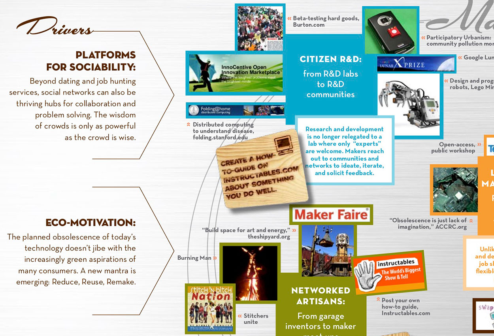

IFTF frequently publishes their research in the form of print 'maps' that illustrate the major trends driving the future. IFTF and Supereverywhere brought me on as UX designer to bring their maps into the digital space, where they could become living entities rather than static artifacts. We provided discovery research, experience briefs, and visual design to IFTF, who then partnered with their technical vendor for development and launch.